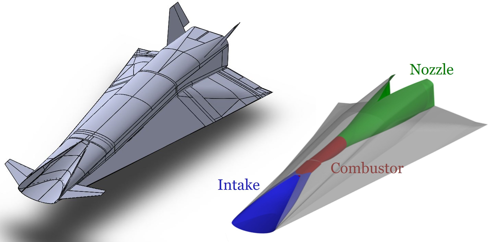
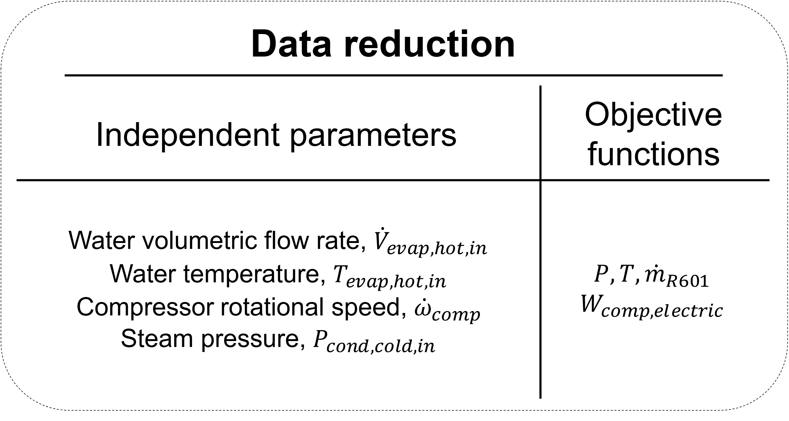
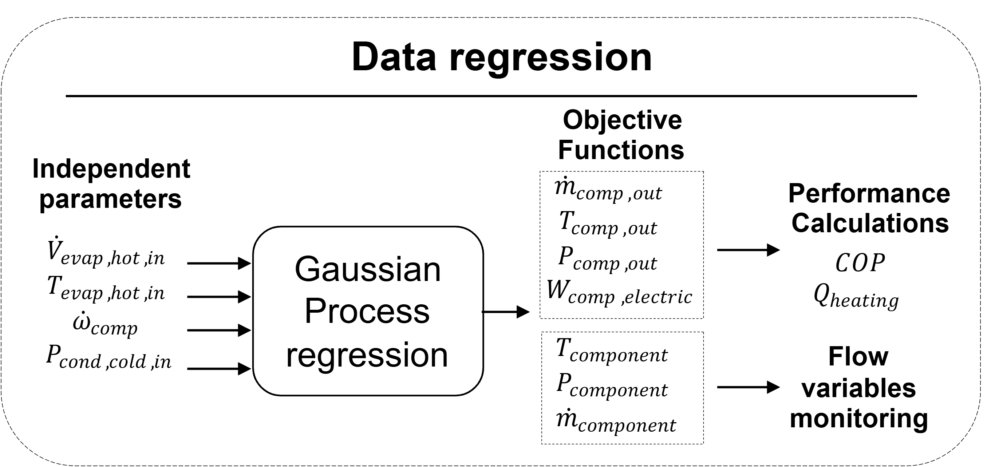
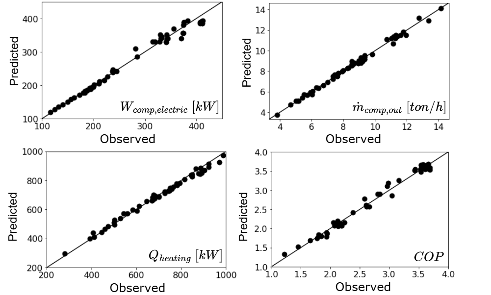
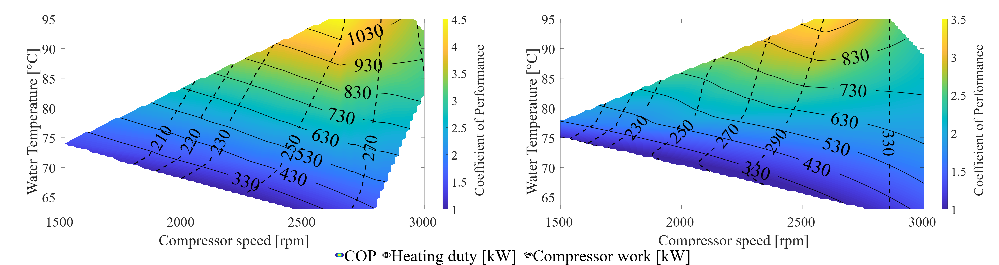
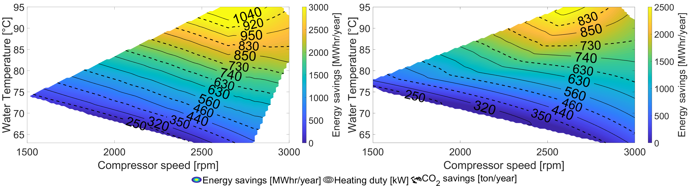

Introduction
Ramjet propulsion remains a key technology for high-speed flight, yet its design and optimization are challenging due to the complex flow physics involved. While many low-fidelity studies exist, most emphasize individual components such as intakes, combustors, or nozzles, rather than addressing the propulsion system as a whole. This limits the ability to capture the true performance trends across the complete flow path.
In this work, we propose a holistic, low-fidelity methodology that integrates design and analysis approaches for all major ramjet components. By coupling intake, combustor, and nozzle design with varying flight conditions, we establish a cost-efficient framework to explore the ramjet design space. This allows for performance characterization that is both comprehensive and scalable.
The methodology evaluates a wide range of design parameters, including intake wedge angle, exit Mach number, combustor length, fuel mass flow, fuel strut placement, and nozzle geometry, together with flight altitude and Mach number. This multi-dimensional matrix enables systematic assessment of engine performance under diverse operating scenarios.
To manage the complexity of this design space, we apply Shapley Additive Explanations (SHAP), a feature importance technique that quantifies the influence of each variable on propulsive performance. This provides clear insights into how flight and operational conditions drive engine behavior, supporting more informed design choices and optimization of ramjet propulsion systems.
Use this link to access the publication.
Methodology
A ramjet propulsion system integrated to a hypersonic cruiser was studied in this work. It consists of three main components which are supersonic intake, constant-area combustor, and diverged nozzle:
Step 1 – Reduced-order model development for engine design
The design tool (accessible via this link) was developed for ramjet/scramjet propulsion system design exercises and includes dedicated modules for the intake, combustor, and nozzle. For the intake, a Busemann design approach and related flow relations were implemented. The combustor and nozzle modules were modeled using one-dimensional ordinary differential equations (ODEs) coupled with detailed chemistry to analyze performance. Since the combustor is a constant-area duct, the flow accelerates to the sonic limit at the throat. This means that for every design scenario—defined by flight conditions and design parameters—there exists a unique fuel consumption (equivalence ratio) that achieves thermal choking at the throat.
Step 2 – Data Reduction
For each measurement, the time-series data was averaged after the system reached steady-state conditions. System state variables — such as pressure and temperature at component boundaries, along with performance parameters including compressor work and heating duty — were then reduced as functions of the independent parameters.
Step 3 – Sensitivity Analysis with Shapley Additive Explanation
A machine learning model was developed for each objective function, enabling performance estimation and flow variable monitoring at operating points not covered in the experimental work.
 Digital twin of the heat pump for performance estimation and system variable monitoring
The generated digital twin of the heat pump system enabled performance mapping across varying independent parameters and supported an economic assessment of its deployment as a replacement for a fossil-fueled boiler in industrial settings.
 